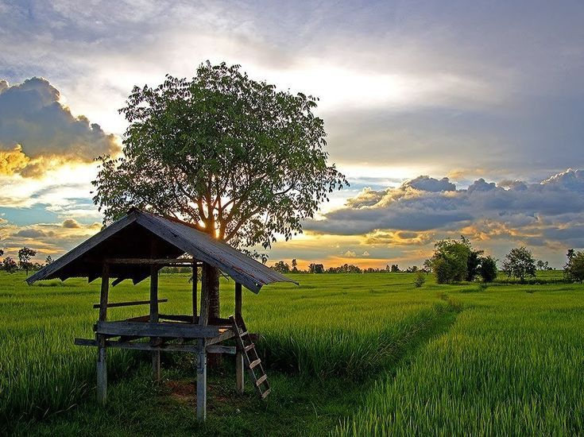

Desa Kotasan
Desa Maju Rakyat Makmur
Selamat Datang Di Desa Kotasan

Desa Kotasan
Desa Maju Rakyat Makmur
Selamat Datang Di Desa Kotasan
Selamat Datang Di Desa Kotasan
Selamat Datang Di Desa Kotasan
Desa adalah pemukiman atau komunitas manusia yang berkelompok, Lebih besar dari dusun tetapi lebih kecil dari kota, dengan populasi biasanya berkisar dari beberapa ratus hingga beberapa ribu. masyarakat desa adalah sekelompok orang atau individu yang tinggal disuatu tempat dan saling terkait satu sama yang lain. Biasanya dalam suatu masyarakat desa akan terjadi interaksi yang teratur atau terstruktur Salah satu nya ialah Desa Kotasan. Desa Kotasan merupakan salah satu desa yang ada di kecamatan Galang, Kabupaten Deli Serdang, provinsi Sumatra Utara, Indonesia. Desa ini memiliki tujuh dusun dan memiliki dua masjid,tiga mushola,empat sekolah dasar dan memiliki lapangann sepak bola yang sangat luas bersebelahan dengan pemakaman umum yang berada diperbatasan dusun empat dan dusun lima.
Griya Kotasan Asri
Status Rumah Subsidi : 29 Unit
Terjual Subsidi : 75 Unit
Komersil : 0 Unit
Terjual Komersil : 0 Unit
Info Pemesanan

Sd 101965 Kotasan
Guru : 9
Siswa Laki-laki : 79
Siswa Perempuan : 70
Info Selengkapnya
Mahasiswa ITBI